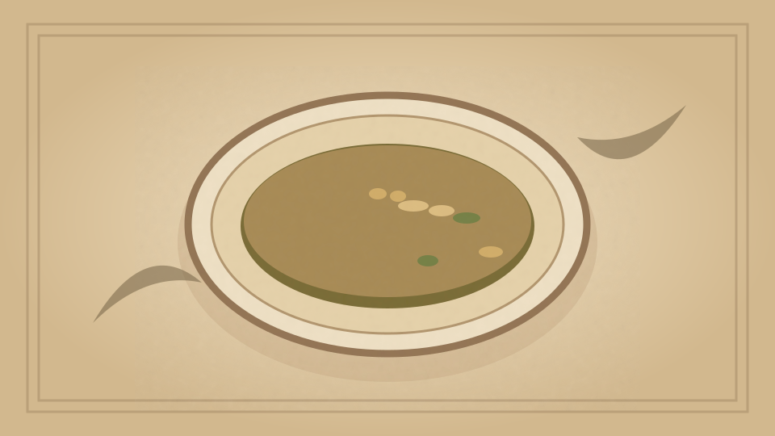

1910 · Fannie Merritt Farmer · SOUPS
Asparagus Soup
The Boston Cooking-School Cook Book
❧ ───── ❦ ───── ❧

Historical Recipe
The following text is extracted from the 1910 edition, retaining historical terminology and quantities.
Original Ingredients & Directions
3 cups White Stock II or III
1 can asparagus
2 cups cold water
1 slice onion
¼ cup butter
¼ cup flour
2 cups scalded milk
Salt and pepper
Drain and rinse asparagus, reserve tips, and add stalks to cold water; boil five minutes, drain, add stock, and onion; boil thirty minutes, rub through sieve, and bind with butter and flour cooked together. Add salt, pepper, milk, and tips.
Automatically extracted transcription; editorial verification pending. Historical instructions may not meet modern food-safety standards.